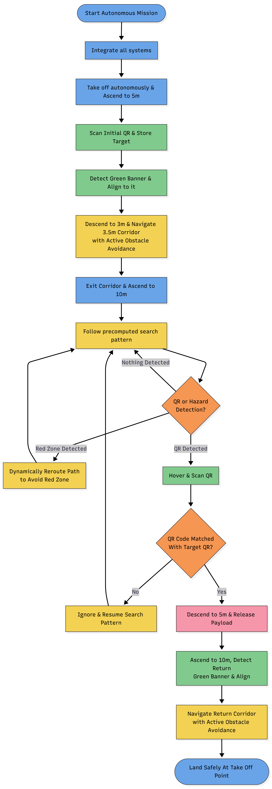
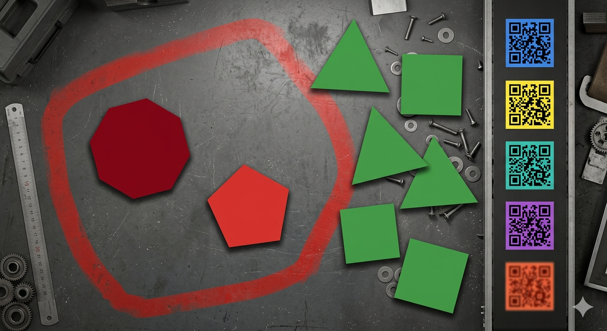
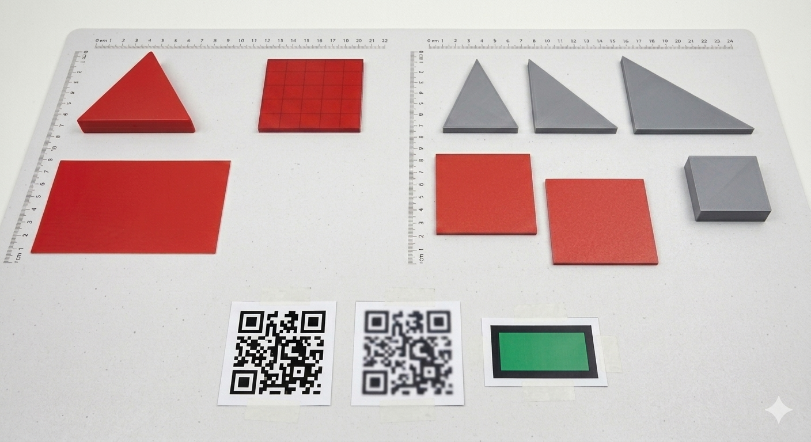

Autonomous Rover
Project Overview
My primary objective in this project was to design and build a Pixhawk-based autonomous ground rover capable of high-precision waypoint navigation and real-time obstacle avoidance. I wanted to address the challenges of localized navigation errors on rugged terrain, creating a robust, self-correcting mechanical platform suitable for surveying, mapping, and automated land logistics.
Mechanical & Firmware Integration
I built the rover on a high-clearance 4-wheel drive chassis to ensure traction and stability across uneven ground. At the heart of the system is a Pixhawk 2.4.8 autopilot running custom-configured ArduRover stack, coupled with an Arduino microcontroller handling the low-level ultrasonic array polling and peripheral control.
To achieve accurate navigation, I implemented sensor fusion between GPS, a digital compass, and wheel encoders. The biggest challenge was countering compass distortion caused by the drive motors. I resolved this by scripting customized calibration filters and offset matrices, enabling the rover to correct its heading within 1 to 2 seconds of startup.
Obstacle Avoidance & Path Correction
I designed a multi-sensor collision avoidance algorithm that runs dynamically in parallel with standard GPS mission waypoints. Using a front-facing ultrasonic array and lidar sensors, the system performs continuous environmental sweeps.
When an obstacle is detected within a 2-meter threshold, my code triggers an override event. The rover calculates a local vector bypass, navigates safely around the object, and then re-establishes lock with the original GPS course coordinates once the obstacle clears.
Key Deliverables & Achievements
- Successfully engineered a self-guided ground rover achieving 2-5m GPS waypoint accuracy on varying outdoor terrains.
- Developed sensor-fusion logic combining GPS, ultrasonic rangefinders, and telemetry to handle active obstacle mapping.
- Designed and fabricated custom structural mounting brackets using 3D printing to protect fragile flight controller pins from vibrations.


